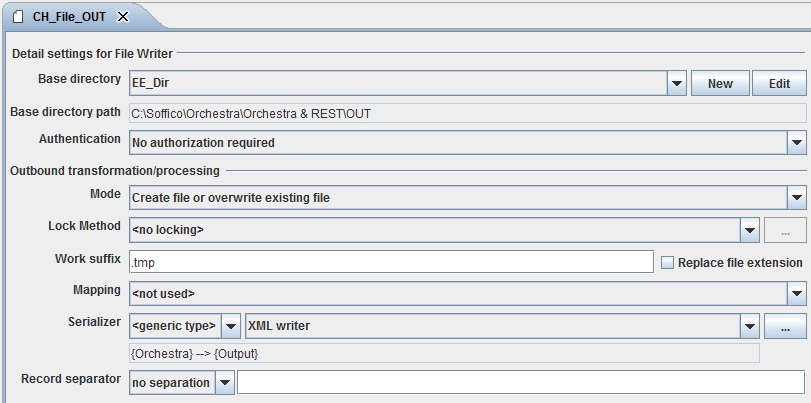
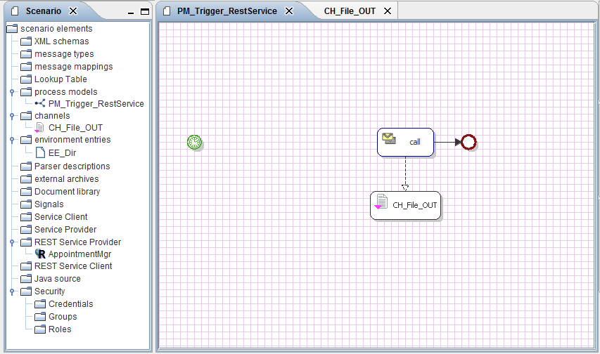

Preparation

Topic content
To test the scenario we first build the scenario shell for the REST-Implementations. One of the fastest way to design a process for the following implementations is a timer- triggered process with a file-writer channel.
1.Start the Orchestra-Designer and create a scenario “AppointmentServiceClient”.
2.Create a file-writer-Channel and an environment entry for your local filepath.
3.Configure your Channel like in the Screenshot below

Figure 61 – Preparation – Filewriter Configuration
4.Now you can create a process model with an timer start event (Set the repeat interval up to a minute or more),an end event and a call to your file-writer (Don’t forget the Parameter assignment to configure the Filename.)
5.Import the WADL for the appointmentService. (Folder “Orchestra REST Tutorial \AppointmentService”). REST Service Client
6.Enhance your REST Service Client with the Base URL (Environment Entiry) of the AppointmentService we set up in Chapter 3.2.

Figure 62 – Preparation – Scenario container
You can use this or the 00_AppointmentServiceClient_Shell scenario which is contained in the tutorial folder. Now you’re ready for implementing the samples.